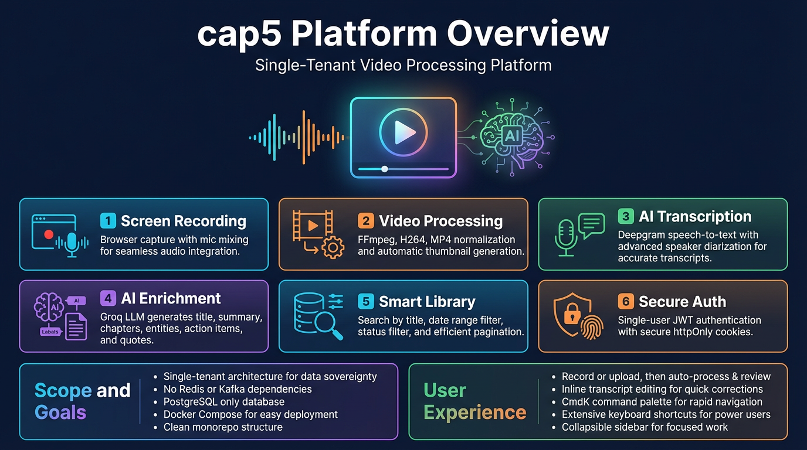

A single-tenant video processing platform for uploading or recording video, normalizing it into MP4, generating transcripts with speaker diarization, and producing AI enrichments — all from one clean monorepo.
Browser-based screen, tab, or window capture using MediaRecorder API. Optional microphone mixing via AudioContext. Records to WebM, auto-triggers upload.
FFmpeg normalizes any input to H.264/AAC MP4 with faststart. Generates best-frame thumbnail. ffprobe extracts duration, dimensions, FPS, and audio presence.
Deepgram Nova-2 speech-to-text with speaker diarization, language detection, smart formatting, and punctuation. Stored as timed segments with WebVTT.
Groq Llama 3.3 70B generates title, summary, chapters (max 12), entities, action items, and quotes. Multi-chunk synthesis for long transcripts (>24K chars).
Search by title with instant client-side filtering. From/to date range pickers. Status filter (all, processing, complete, failed). Cursor-based pagination.
Single-user email/password auth with bcrypt. Stateless JWT (HS256, 7-day lifetime). httpOnly Secure SameSite=Strict cookie. First-run setup flow.
Video player with custom controls and speaker-aware playback skipping
Multi-tab sidebar — transcript, summary, chapters, notes, action items
Inline editing — title, transcript text, speaker labels, operator notes
Chapter timeline with click-to-seek navigation
Cmd+K — command palette with fuzzy search across all library videos
Space / Arrows — play/pause and seek on the watch page
Collapsible sidebar — persisted to localStorage, responsive layout
Confirmation dialogs — for destructive actions like delete and retry
Single-tenant, single-user — one account owns everything, no multi-tenancy overhead
PostgreSQL does everything — metadata, queue, transcripts, AI outputs, idempotency, webhook ledger
Docker Compose deployment — one command to build and run the full stack
Clean monorepo — pnpm workspaces with 4 apps and 3 shared packages
Idempotent mutations — every mutation requires an Idempotency-Key header
No multi-tenancy — no user_id scoping, no org boundaries, no access control lists
No Redis / Kafka — PostgreSQL FOR UPDATE SKIP LOCKED replaces external brokers
No HLS streaming — schema has surface area but no active pipeline
No production platform manifests — Docker Compose only, no Kubernetes
No push updates — frontend polls for status, no WebSocket channel yet

Infographic will appear here once generated